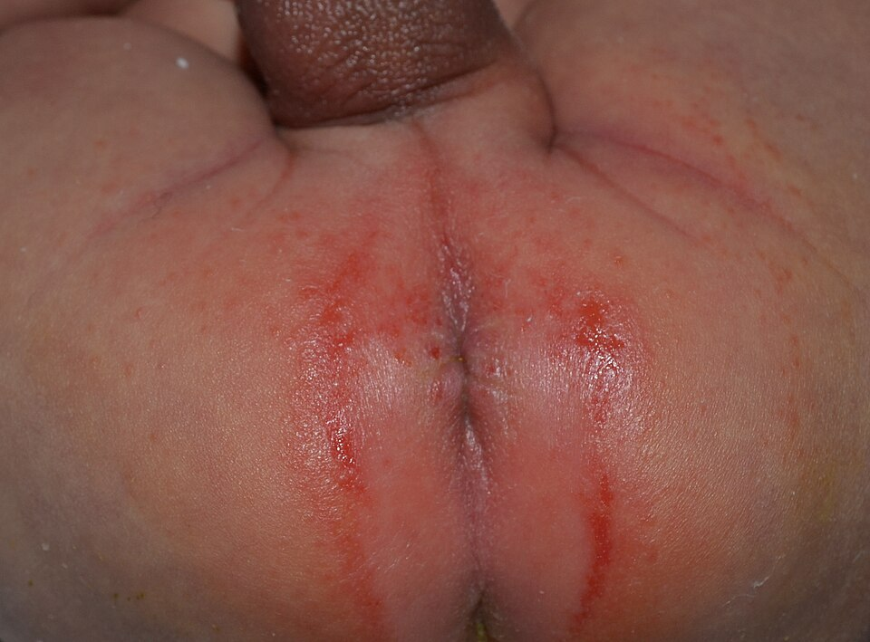
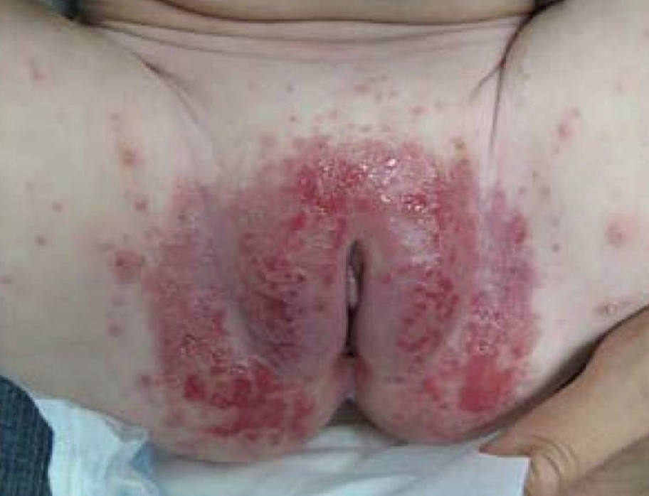

衛教目錄 › 皮膚 › 尿布疹
尿布疹
包尿布的地方紅紅的、寶寶換尿布時哭鬧？大多數是尿液和糞便刺激皮膚造成的，好好清潔、擦一層厚厚的屁屁膏，2–3 天就會改善。但如果皺褶裡也紅、周圍冒出小紅點，可能已經合併念珠菌感染，需要抗黴菌藥膏。
9–12 個月最常發生的年紀；2 歲以下都很常見
2 種最常見的是刺激性尿布疹與念珠菌尿布疹
2–3 天好好照顧仍沒改善，要想到念珠菌
1為什麼會紅屁股？
悶濕
尿布裡又濕又熱，皮膚泡軟，保護力變差。
尿和便便刺激
尿液分解產生氨，便便裡的消化酵素會「侵蝕」皮膚；拉肚子時最嚴重。
摩擦
尿布和皮膚來回摩擦，最凸出的地方最先破皮。
念珠菌趁機感染
破皮又潮濕的皮膚，念珠菌（一種黴菌）很容易長；最近吃抗生素時更常見。
2刺激引起，還是念珠菌感染？
最好用的兩個線索：看皺褶和看周圍有沒有小紅點 [1,4]。
| 看哪裡 | 刺激性尿布疹 | 念珠菌尿布疹 |
|---|---|---|
| 位置 | 屁股、外陰部、下腹、大腿內側等凸出、直接接觸尿布的地方 | 同樣區域，但鼠蹊、屁股縫等皺褶處也紅，常是最紅的地方 |
| 皺褶 | 不紅（皺褶深處沒碰到尿布） | 紅 |
| 顏色與外觀 | 粉紅到紅、亮亮的，嚴重時破皮 | 深紅、牛肉色，邊界清楚，邊緣可有脫屑 |
| 周圍 | 通常沒有 | 衛星狀小紅點、小膿包散在主要紅疹外圍 |
| 嘴巴 | 正常 | 有時合併鵝口瘡（舌頭、臉頰內側擦不掉的白斑） |
| 常見時機 | 拉肚子、尿布換太慢、換新品牌尿布或濕紙巾 | 紅屁股超過 3 天、最近吃抗生素、媽媽乳頭有念珠菌 |
| 對屁屁膏的反應 | 好好照顧 2–3 天就改善 | 只擦屁屁膏不太會好，需要抗黴菌藥膏 |
兩種常常同時存在：刺激性尿布疹拖久了，就容易長念珠菌。看不出來時，請醫師檢查。
3照片對照

Dailyboth／Wikimedia Commons／CC0，已縮小

Elaine C. Siegfried、Adelaide A. Hebert／Wikimedia Commons／CC BY 4.0，已轉為 JPEG
4照顧的 ABCDE
A Air 透氣
換尿布時讓屁股晾一下；每天安排一段不包尿布的時間（底下鋪防水墊）[2]。
換尿布時讓屁股晾一下；每天安排一段不包尿布的時間（底下鋪防水墊）[2]。
B Barrier 屁屁膏
每次換尿布都擦一層厚厚的氧化鋅或凡士林類屁屁膏，隔開尿和便便 [1,2]。
每次換尿布都擦一層厚厚的氧化鋅或凡士林類屁屁膏，隔開尿和便便 [1,2]。
C Cleansing 清潔
用溫水或無香料、無酒精的濕紙巾輕輕沾乾淨，不要用力擦；拍乾或晾乾再包 [2]。
用溫水或無香料、無酒精的濕紙巾輕輕沾乾淨，不要用力擦；拍乾或晾乾再包 [2]。
D Diaper 尿布
選吸收力好的紙尿布，勤換：新生兒約每 1–2 小時、較大嬰兒約每 3–4 小時，一有便便就換；尺寸不要太緊 [2]。
選吸收力好的紙尿布，勤換：新生兒約每 1–2 小時、較大嬰兒約每 3–4 小時，一有便便就換；尺寸不要太緊 [2]。
E Education 觀察
2–3 天沒改善、有皺褶紅或衛星狀小紅點，就回診檢查是不是念珠菌。
2–3 天沒改善、有皺褶紅或衛星狀小紅點，就回診檢查是不是念珠菌。
5屁屁膏怎麼擦？
- 擦得像「糖霜」一樣厚：要能蓋住皮膚，看不太到底下的紅色，才有隔離效果。
- 換尿布時不用全部擦掉：只要把沾到便便的部分輕輕清掉，剩下乾淨的膏留著，再補一層上去；每次都用力擦掉，反而會磨破皮膚。
- 選擇：含氧化鋅的白色膏體最常用，嚴重紅腫、破皮時效果好 [1,2]；凡士林較清爽，適合平常預防。
- 要洗掉時：洗澡時用嬰兒油或礦物油先溶開，再用溫水洗，比較不會刺激。
- 同時要擦藥膏時：先擦藥膏（抗黴菌藥膏或醫師開的類固醇），等一下再蓋上屁屁膏。
6如果是念珠菌感染
- 抗黴菌藥膏（如 clotrimazole、miconazole、nystatin）每天擦 2–3 次，範圍要包含周圍的小紅點，再蓋上屁屁膏 [1,3]。
- 紅疹消失後再多擦 2–3 天，太早停容易復發；整個療程通常約 1–2 週。
- 有鵝口瘡要一起治療：口腔的念珠菌會隨著吞嚥到腸道，再跑到屁股；奶嘴、奶瓶要煮沸消毒。
- 哺餵母乳的媽媽：如果乳頭紅、痛、有灼熱感，媽媽也要一起看醫師治療。
- 1 週沒有改善，或反覆發作，請回診。
7不建議的做法
- 爽身粉、痱子粉：寶寶可能吸入粉末傷害肺部，而且潮濕時會結塊、摩擦皮膚。
- 自行擦強效類固醇，或含類固醇的抗黴菌複方藥膏：尿布裡吸收特別多，可能造成皮膚變薄、紫紅色結節或其他副作用，嬰兒不建議使用 [1,3]。
- 含香料、酒精的濕紙巾或肥皂，以及用力搓洗。
- 吹風機吹乾：容易燙傷，自然晾乾或輕輕拍乾就好。
- 來源不明的偏方、草藥膏：可能含有刺激物或過敏原。
8出現這些情形，請就醫
- 好好照顧 2–3 天沒改善，或越來越嚴重
- 皺褶處紅、周圍有小紅點或小膿包（可能是念珠菌）
- 出現水泡、黃色結痂、流膿（可能是細菌感染）
- 破皮、出血、很痛，寶寶換尿布時一直大哭
- 發燒、精神不好、吃奶變差
- 紅疹擴散到尿布外（臉、手腳、頭皮），或合併長期腹瀉、生長不好
- 反覆發作，或已經用藥 1 週仍沒好
近五年實證重點（2026/11 整理）
- 兩大類型：刺激性接觸性皮膚炎與念珠菌相關尿布疹最常見；表現不典型或治療無效時，要考慮其他鑑別診斷 [1]。
- 預防：超吸收型拋棄式尿布、勤換、每 1–2 天以溫和清潔劑洗澡、pH 平衡的濕紙巾、尿布外時間、規則使用屏障霜，可降低發生率與嚴重度 [2]。
- 屏障製劑：系統性回顧顯示氧化鋅、含 dexpanthenol 的潤膚劑有效且副作用少；疑似黴菌感染時 clotrimazole 有效，但研究異質性高 [2,3]。
- 臨床評估：範圍、紅斑程度、丘疹膿包與破皮是最常用的評估項目，但尚無公認的標準化評分量表 [4]。
主要類型
| 類型 | 典型表現 | 處置重點 |
|---|---|---|
| 刺激性接觸性皮膚炎 | 凸面（臀部、外陰、下腹、大腿內側）紅斑，皺褶不受影響；嚴重時糜爛（W 形） | ABCDE 照護、厚層氧化鋅；嚴重發炎可短期弱效類固醇 |
| 念珠菌相關尿布疹 | 深紅、侵犯皺褶、邊界清楚伴周邊脫屑，衛星狀丘疹或膿疱；可合併鵝口瘡；常 > 3 天、近期抗生素 | 外用 azole 或 nystatin＋屏障霜；必要時 KOH 鏡檢確認 |
鑑別診斷：何時不是單純尿布疹
| 疾病 | 區分線索 |
|---|---|
| 嬰兒脂漏性皮膚炎 | 侵犯皺褶，鮭魚紅帶黃色油膩鱗屑；同時有頭皮、眉毛、耳後脂漏（乳痂）；不太癢 |
| 嬰兒乾癬（尿布區乾癬） | 邊界非常清楚、亮紅，侵犯皺褶，鱗屑少；常規治療無效；可見其他部位斑塊或家族史 |
| 異位性皮膚炎 | 尿布區反而常不受影響；其他典型部位有濕疹、癢 |
| 肛門周圍鏈球菌皮膚炎 | 肛門周圍鮮紅、邊界清楚，疼痛、排便痛或血絲；快篩或培養陽性；需口服抗生素 |
| 膿痂疹（大疱性） | 鬆弛水疱、蜂蜜色痂、環狀糜爛；金黃色葡萄球菌 |
| 過敏性接觸性皮膚炎 | 侷限在尿布鬆緊帶、魔鬼氈、染料接觸處（腰部、大腿外側）；較大幼兒 |
| Jacquet 糜爛性皮膚炎 | 嚴重刺激造成穿鑿樣潰瘍與丘疹；長期腹瀉、失禁或尿布照護差 |
| 嬰兒臀部肉芽腫 | 紫紅色結節；與長期使用強效類固醇或閉塞有關 |
| 缺鋅（腸病性肢端皮膚炎） | 口周、肢端加上尿布區糜爛結痂，合併腹瀉、掉髮、躁動；早產兒、斷母乳後；血鋅與 ALP 低 |
| 蘭格罕細胞組織球增生症 | 皺褶糜爛合併瘀點、脂漏樣頭皮病灶；治療無效、肝脾腫大、生長不良時需切片 |
| 川崎病 | 急性期會陰部紅斑，之後脫皮；合併持續發燒 ≥ 5 天、結膜充血、草莓舌、手腳腫 |
| 疥瘡、單純疱疹、先天梅毒 | 疥瘡隧道與結節、家人也癢；群聚水疱糜爛；新生兒合併其他梅毒表現 |
| 燙傷、虐待 | 浸泡燙傷的清楚界線、與病史不符的傷口 |
整理自 [1]。治療 1–2 週無效、出現瘀點、結節、水疱、全身症狀或生長不良時，應轉介兒童皮膚科。
治療與劑量
| 藥物 | 用法 | 備註 |
|---|---|---|
| 屏障與基礎照護 | ||
| 氧化鋅軟膏／糊劑 | 每次換尿布厚塗 | 不需每次完全清除；可加在藥膏上方。 |
| 凡士林、含 dexpanthenol 潤膚劑 | 每次換尿布塗抹 | 預防與輕症 [2]。 |
| 抗發炎 | ||
| Hydrocortisone 1%（弱效類固醇） | 每天 1–2 次，最多約 7 天 | 嚴重發炎時短期使用，上方再加屏障霜；避免中強效以上類固醇 [1]。 |
| 念珠菌：外用 | ||
| Clotrimazole 1% 乳膏 | 每天 2–3 次 | 持續到皮疹消失後 2–3 天，通常 7–14 天 [3]。 |
| Miconazole 2% 乳膏 | 每天 2 次 | 同上。 |
| Nystatin 乳膏（100,000 U/g） | 每天 2–4 次 | 同上。 |
| Clotrimazole＋betamethasone 等含強效類固醇複方 | — | 不建議用於嬰兒：皮膚萎縮、臀部肉芽腫、全身吸收 [1]。 |
| 合併鵝口瘡 | ||
| Nystatin 口服懸液（100,000 U/mL） | 嬰兒：1–2 mL 每天 4 次，分塗兩側頰黏膜 | 持續到症狀消失後 48 小時；奶嘴、奶瓶消毒。 |
| Miconazole 口腔凝膠 | 依仿單，少量分次塗抹 | 4 個月以下嬰兒有噎到風險，多數仿單不建議；與 warfarin 等有交互作用。 |
| 頑固或反覆 | ||
| Fluconazole 口服 | 3–6 mg/kg QD（首劑可 6 mg/kg），7–14 天 | 外用治療失敗、廣泛或合併嚴重鵝口瘡時考慮；新生兒間隔依週數調整。 |
外用抗黴菌藥療程依臨床反應調整；治療效果不佳時，以 KOH 鏡檢或培養確認，並重新考慮鑑別診斷。藥物年齡與劑型以國內仿單為準。
參考資料
- Chiriac A, Wollina U. Diaper dermatitis—a narrative review of clinical presentation, subtypes, and treatment. Wien Med Wochenschr. 2024;174(11–12):246–256. doi:10.1007/s10354-023-01024-6 回顧
- Octarica SG, Ellistasari EY, Dewi AK, et al. Preventive and curative approaches to diaper dermatitis in children: a systematic review. Acta Dermatovenerol Alp Pannonica Adriat. 2025;34(3):101–107. 系統性回顧
- Alkhamis ZZ, Bhagchandani M, Idris M, et al. Clinical effectiveness of barrier preparations in the management of diaper dermatitis: a systematic review and meta-analysis. Cureus. 2026;18(1):e102379. doi:10.7759/cureus.102379 統合分析
- Dunk AM, Broom M, Fourie A, et al. Clinical signs and symptoms of diaper dermatitis in newborns, infants, and young children: a scoping review. J Tissue Viability. 2022;31(3):404–415. doi:10.1016/j.jtv.2022.03.003 範疇回顧
- Hertiš Petek T, Petek M, Petek T, et al. Emerging links between microbiome composition and skin immunology in diaper dermatitis: a narrative review. Children (Basel). 2022;9(1):112. doi:10.3390/children9010112 回顧
文獻搜尋截至 2026 年 11 月。
本頁內容整理於 2026 年 11 月，供門診衛教與醫療人員參考，不能取代個別的診察與判斷。藥物劑量請以藥品仿單及最新指引為準。